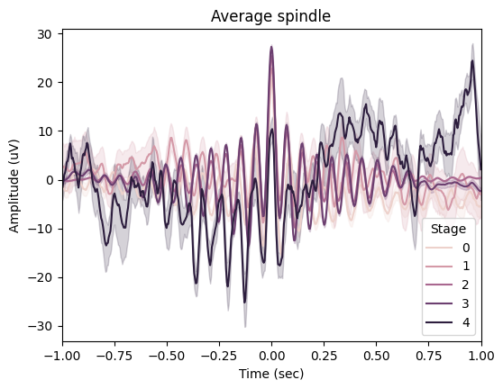
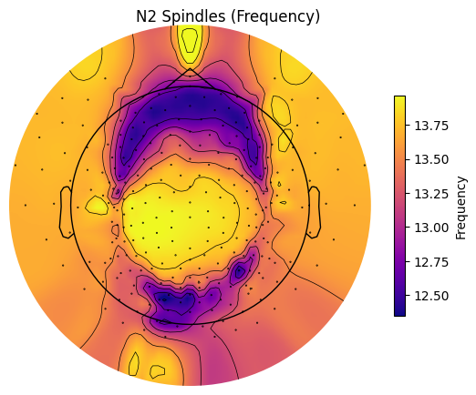
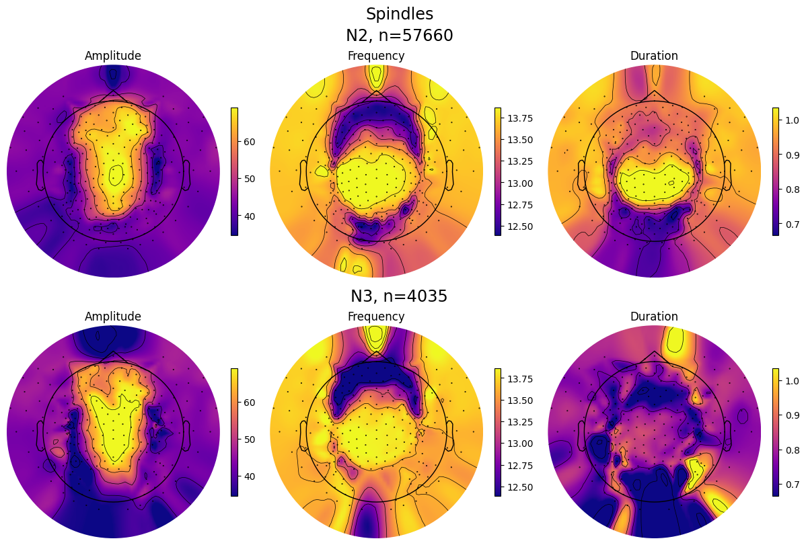

Spindles analysis#
Intoductory notes:#
This notebook presents spindles detection and analysis functionality.
Recommended reading:
Import module#
from sleepeeg.pipeline import SpindlesPipe
Spindles detection#
spindles_pipe = SpindlesPipe(
path_to_eeg=r"C:\Users\Gennadiy\Documents\data\HZ4\processing\ICAPipe\after_ica_raw.fif",
output_dir=r"C:\Users\Gennadiy\Documents\data\HZ4\processing",
path_to_hypno=r"C:\Users\Gennadiy\Documents\data\HZ4\staging.txt",
hypno_freq=1,
)
Opening raw data file C:\Users\Gennadiy\Documents\data\HZ4\processing\ICAPipe\after_ica_raw.fif...
Reading extended channel information
Read a total of 1 projection items:
Average EEG reference (1 x 257) idle
Range : 0 ... 2032249 = 0.000 ... 8128.996 secs
Ready.
Opening raw data file C:\Users\Gennadiy\Documents\data\HZ4\processing\ICAPipe\after_ica_raw-1.fif...
Reading extended channel information
Read a total of 1 projection items:
Average EEG reference (1 x 257) idle
Range : 2032250 ... 2229772 = 8129.000 ... 8919.088 secs
Ready.
Hypnogram is LONGER than data by 0.91 seconds. Cropping hypnogram to match data.size.
Please refer to the YASA’s documentation for details about the arguments.
spindles_pipe.detect(
picks=["eeg"],
reference="average",
include=(0, 1, 2, 3, 4),
freq_sp=(12, 15),
freq_broad=(1, 30),
duration=(0.5, 2),
min_distance=500,
thresh={"corr": 0.65, "rel_pow": 0.2, "rms": 1.5},
multi_only=False,
remove_outliers=False,
verbose=False,
save=True,
)
Reading 0 ... 2229772 = 0.000 ... 8919.088 secs...
EEG channel type selected for re-referencing
Applying average reference.
Applying a custom ('EEG',) reference.
Removing existing average EEG reference projection.
[Parallel(n_jobs=1)]: Done 17 tasks | elapsed: 0.6s
[Parallel(n_jobs=1)]: Done 71 tasks | elapsed: 2.8s
[Parallel(n_jobs=1)]: Done 161 tasks | elapsed: 6.6s
[Parallel(n_jobs=1)]: Done 17 tasks | elapsed: 0.7s
[Parallel(n_jobs=1)]: Done 71 tasks | elapsed: 3.1s
[Parallel(n_jobs=1)]: Done 161 tasks | elapsed: 7.3s
Please refer to the YASA’s documentation for details about the arguments.
spindles_pipe.results.summary(
grp_chan=False, grp_stage=True, mask=None, aggfunc="mean", sort=True
)
| Count | Density | Duration | Amplitude | RMS | AbsPower | RelPower | Frequency | Oscillations | Symmetry | |
|---|---|---|---|---|---|---|---|---|---|---|
| Stage | ||||||||||
| 0 | 3576 | 202.588633 | 0.913783 | 51.198008 | 10.981419 | 1.945912 | 0.299497 | 12.485377 | 10.743289 | 0.489896 |
| 1 | 117 | 18.000000 | 0.762291 | 44.201503 | 9.829130 | 1.989036 | 0.397107 | 13.675354 | 10.068376 | 0.475677 |
| 2 | 57660 | 880.305344 | 0.949568 | 51.638215 | 11.039142 | 2.005896 | 0.379532 | 13.478268 | 12.317499 | 0.504665 |
| 3 | 4035 | 97.228916 | 0.792961 | 57.127448 | 12.584465 | 2.131637 | 0.339456 | 13.627088 | 10.452045 | 0.504647 |
| 4 | 13 | 0.742857 | 0.556923 | 39.408395 | 9.360948 | 1.957157 | 0.322138 | 12.518032 | 6.461538 | 0.647187 |
spindles_pipe.plot_average(
save=True,
center="Peak",
hue="Stage",
time_before=1,
time_after=1,
filt=(None, None),
mask=None,
)

spindles_pipe.plot_topomap(
prop="Frequency", # Any of the event properties returned by pipe.results.summary().
stage="N2", # Stage to plot the topomap for.
aggfunc="mean", # Aggregation function for channel grouping.
# Should contain at least index of the provided "stage".
sleep_stages={"Wake": 0, "N1": 1, "N2": 2, "N3": 3, "REM": 4},
axis=None, # Whether to plot on provided matplotlib axis.
save=True, # Whether to save the plot as a file.
topomap_args=dict(cmap="plasma"), # Arguments passed to mne.viz.plot_topomap().
cbar_args=None, # Arguments passed to plt.colorbar().
)

spindles_pipe.plot_topomap_collage(
# Some of the event properties returned by pipe.results.summary().
props=["Amplitude", "Frequency", "Duration"],
aggfunc="mean", # Aggregation function for channel grouping.
# Tuple of strs or "all", e.g., ("N1", "REM") or "all" (plots all "sleep_stages").
stages_to_plot="all",
# Should contain at least indices of the provided "stages_to_plot".
sleep_stages={"N2": 2, "N3": 3},
low_percentile=5, # Set min color value by percentile of the property data.
high_percentile=95, # Set max color value by percentile of the property data.
fig=None, # Instance of plt.Figure, a new fig will be created if None.
save=True, # Whether to save the plot as a file.
topomap_args=dict(cmap="plasma"), # Arguments passed to mne.viz.plot_topomap().
cbar_args=None, # Arguments passed to plt.colorbar().
)

Constructs MNE AverageTFR object for every available sleep stage.
spindles_pipe.apply_tfr(
freqs=(10, 20), # Interval of frequencies of interest.
n_freqs=100, # TFR frequency resolution.
time_before=1, # Time in sec before the peak to use in TFR computation. Should be positive.
time_after=1, # Time in sec after the peak to use in TFR computation.
method="morlet", # TFR method: 'morlet' or 'multitaper'.
save=True, # Whether to save AverageTFR object per sleep stage as hdf5 file.
overwrite=False, # Whether to overwrite existing files.
)
spindles_pipe.tfrs
100%|██████████| 257/257 [01:54<00:00, 2.25it/s]
100%|██████████| 224/224 [00:11<00:00, 20.35it/s]
100%|██████████| 236/236 [00:10<00:00, 22.90it/s]
100%|██████████| 97/97 [00:01<00:00, 64.46it/s]
100%|██████████| 13/13 [00:00<00:00, 65.96it/s]
{'N2': <AverageTFR | time : [-1.000000, 1.000000], freq : [10.000000, 20.000000], nave : 224, channels : 257, ~98.5 MB>,
'N3': <AverageTFR | time : [-1.000000, 1.000000], freq : [10.000000, 20.000000], nave : 18, channels : 224, ~85.9 MB>,
'Wake': <AverageTFR | time : [-1.000000, 1.000000], freq : [10.000000, 20.000000], nave : 15, channels : 236, ~90.5 MB>,
'N1': <AverageTFR | time : [-1.000000, 1.000000], freq : [10.000000, 20.000000], nave : 1, channels : 97, ~37.3 MB>,
'REM': <AverageTFR | time : [-1.000000, 1.000000], freq : [10.000000, 20.000000], nave : 1, channels : 13, ~5.1 MB>}
spindles_pipe.tfrs["N2"].data
array([[[ 235.19789392, 241.13863044, 246.81650316, ...,
390.04835369, 380.92876896, 371.43179884],
[ 232.80397959, 238.72488051, 244.37866515, ...,
387.61974822, 378.44292437, 368.88648476],
[ 230.71677279, 236.63326118, 242.27868279, ...,
385.42930622, 376.18279893, 366.55485118],
...,
[ 85.04565195, 86.80965606, 87.88874761, ...,
125.74114531, 124.53894104, 122.35630946],
[ 83.97344584, 85.67662766, 86.69224717, ...,
124.23107155, 123.08934119, 120.96620941],
[ 82.93642484, 84.58223597, 85.53806693, ...,
122.75337653, 121.66990664, 119.6042937 ]],
[[ 313.67703803, 321.05211167, 328.05883325, ...,
610.51201193, 592.68052556, 574.44822607],
[ 312.89522654, 320.38181984, 327.49611185, ...,
608.38153451, 590.24330626, 571.71896238],
[ 312.3957333 , 320.01324482, 327.25515809, ...,
605.9219796 , 587.49620712, 568.69901309],
...,
[ 105.0163428 , 107.06754403, 108.29401406, ...,
132.96207432, 130.97193514, 128.05398855],
[ 103.80746611, 105.80948902, 106.98630172, ...,
131.44529279, 129.50725742, 126.64142979],
[ 102.63084683, 104.5860881 , 105.71580291, ...,
129.95279644, 128.06622862, 125.25196468]],
[[ 457.55792728, 468.60535171, 479.12357277, ...,
693.00566204, 669.25873002, 645.49143427],
[ 452.66638493, 463.78306574, 474.37387962, ...,
691.01025334, 666.74596531, 642.50589949],
[ 447.96280095, 459.15813442, 469.83209854, ...,
688.33202799, 663.60794945, 638.95046798],
...,
[ 131.48256772, 132.99745843, 133.43078133, ...,
141.41394938, 141.90177177, 141.16294464],
[ 130.11342148, 131.56034841, 131.92181645, ...,
140.3518438 , 140.876485 , 140.16915728],
[ 128.77895221, 130.1601108 , 130.45197262, ...,
139.32984007, 139.88862045, 139.21014445]],
...,
[[ 245.86847216, 252.33465042, 258.55689819, ...,
377.13301239, 367.85833852, 358.27028675],
[ 243.45127371, 249.94269038, 256.19054933, ...,
375.79940151, 366.37541031, 356.64082241],
[ 241.23441335, 247.76151825, 254.04588211, ...,
374.48816914, 364.91727546, 355.03833862],
...,
[ 74.78388822, 76.21975364, 77.06515704, ...,
100.17246068, 100.19846982, 99.37158352],
[ 73.79985107, 75.18002584, 75.96779943, ...,
99.12299554, 99.19438789, 98.40960488],
[ 72.84235241, 74.16896988, 74.90138894, ...,
98.10326228, 98.21797784, 97.47335109]],
[[ 241.36494271, 248.09354196, 254.61232421, ...,
405.13394747, 393.84810318, 382.28209936],
[ 238.82032118, 245.5452274 , 252.05871127, ...,
404.22411017, 392.74339522, 380.98717518],
[ 236.48552445, 243.2164567 , 249.73454815, ...,
403.25246801, 391.58027382, 379.6373206 ],
...,
[ 71.25772365, 72.60658379, 73.38347257, ...,
90.89317826, 90.76392853, 89.86733569],
[ 70.29476767, 71.58918155, 72.30976321, ...,
89.97187941, 89.88113355, 89.02013092],
[ 69.36085229, 70.6034075 , 71.27044651, ...,
89.07759141, 89.02345072, 88.19625182]],
[[ 606.64685831, 623.52093492, 639.83490155, ...,
1032.99704795, 1008.28996664, 982.41045604],
[ 598.55067731, 615.33483246, 631.55236488, ...,
1019.41044232, 994.6326689 , 968.69365742],
[ 590.92770709, 607.64036811, 623.77983814, ...,
1005.96502957, 981.12197775, 955.12926119],
...,
[ 159.77507212, 162.997497 , 164.93566041, ...,
208.69668895, 207.45685961, 204.56177408],
[ 157.82207889, 160.93639596, 162.76116693, ...,
206.22743942, 205.11742624, 202.34283033],
[ 155.92942545, 158.94129633, 160.65876015, ...,
203.8325307 , 202.84654192, 200.18699454]]])
spindles_pipe.tfrs["N2"].to_data_frame()
| time | freq | E1 | E10 | E100 | E101 | E102 | E103 | E104 | E105 | ... | E91 | E92 | E93 | E94 | E95 | E96 | E97 | E98 | E99 | VREF | |
|---|---|---|---|---|---|---|---|---|---|---|---|---|---|---|---|---|---|---|---|---|---|
| 0 | -1.000 | 10.0 | 235.197894 | 313.677038 | 457.557927 | 463.330169 | 525.180791 | 622.145927 | 600.864400 | 556.159703 | ... | 250.152377 | 244.709244 | 259.636104 | 245.629283 | 296.384600 | 248.748248 | 272.968461 | 245.868472 | 241.364943 | 606.646858 |
| 1 | -0.996 | 10.0 | 241.138630 | 321.052112 | 468.605352 | 474.147523 | 538.368841 | 636.464622 | 614.968446 | 570.610058 | ... | 256.005046 | 250.450573 | 265.749784 | 251.785809 | 303.607107 | 254.662394 | 279.081004 | 252.334650 | 248.093542 | 623.520935 |
| 2 | -0.992 | 10.0 | 246.816503 | 328.058833 | 479.123573 | 484.415337 | 551.017633 | 650.007669 | 628.395417 | 584.500158 | ... | 261.556853 | 255.902677 | 271.571843 | 257.672915 | 310.492831 | 260.271054 | 284.844107 | 258.556898 | 254.612324 | 639.834902 |
| 3 | -0.988 | 10.0 | 252.217217 | 334.681054 | 489.084254 | 494.107355 | 563.099348 | 662.743277 | 641.120705 | 597.801564 | ... | 266.794078 | 261.052796 | 277.090207 | 263.276289 | 317.023904 | 265.559591 | 290.243863 | 264.520400 | 260.906890 | 655.551465 |
| 4 | -0.984 | 10.0 | 257.328792 | 340.905730 | 498.463001 | 503.201470 | 574.590514 | 674.646595 | 653.126060 | 610.491162 | ... | 271.705402 | 265.890559 | 282.295187 | 268.583891 | 323.184978 | 270.515916 | 295.269287 | 270.212349 | 266.964735 | 670.638697 |
| ... | ... | ... | ... | ... | ... | ... | ... | ... | ... | ... | ... | ... | ... | ... | ... | ... | ... | ... | ... | ... | ... |
| 50095 | 0.984 | 20.0 | 122.021203 | 130.980934 | 134.777714 | 136.744052 | 168.860200 | 205.491297 | 179.551477 | 193.035162 | ... | 93.720371 | 93.122311 | 104.050859 | 100.510122 | 96.298574 | 98.326353 | 88.754884 | 95.440729 | 86.979921 | 200.969796 |
| 50096 | 0.988 | 20.0 | 122.859551 | 130.914440 | 137.593661 | 139.350289 | 172.301009 | 210.158434 | 183.606701 | 195.897580 | ... | 95.115057 | 94.557831 | 105.171337 | 102.327233 | 97.651789 | 99.468824 | 89.994769 | 97.159114 | 88.381265 | 203.179360 |
| 50097 | 0.992 | 20.0 | 122.753377 | 129.952796 | 139.329840 | 140.871469 | 174.368161 | 213.135447 | 186.215860 | 197.220212 | ... | 95.742176 | 95.248854 | 105.467113 | 103.325590 | 98.243680 | 99.825982 | 90.521224 | 98.103262 | 89.077591 | 203.832531 |
| 50098 | 0.996 | 20.0 | 121.669907 | 128.066229 | 139.888620 | 141.215407 | 174.948650 | 214.275400 | 187.244860 | 196.905878 | ... | 95.558677 | 95.146620 | 104.899150 | 103.447578 | 98.026739 | 99.357505 | 90.292102 | 98.217978 | 89.023451 | 202.846542 |
| 50099 | 1.000 | 20.0 | 119.604294 | 125.251965 | 139.210144 | 140.327190 | 173.976057 | 213.487992 | 186.608658 | 194.906694 | ... | 94.545870 | 94.226651 | 103.454117 | 102.662222 | 96.978134 | 98.048169 | 89.288559 | 97.473351 | 88.196252 | 200.186995 |
50100 rows × 259 columns
spindles_pipe.tfrs["N2"].plot(["E101"]),
spindles_pipe.tfrs["N3"].plot(["E101"])
NOTE: pick_channels() is a legacy function. New code should use inst.pick(...).
No baseline correction applied
NOTE: pick_channels() is a legacy function. New code should use inst.pick(...).
No baseline correction applied
[<Figure size 640x480 with 2 Axes>]
If you want to load saved TFR files:
spindles_pipe.read_tfrs(dirpath=None)
Reading C:\Users\Gennadiy\Documents\data\HZ4\processing\SpindlesPipe\spindles_N1-tfr.h5 ...
Reading C:\Users\Gennadiy\Documents\data\HZ4\processing\SpindlesPipe\spindles_N2-tfr.h5 ...
Reading C:\Users\Gennadiy\Documents\data\HZ4\processing\SpindlesPipe\spindles_N3-tfr.h5 ...
Reading C:\Users\Gennadiy\Documents\data\HZ4\processing\SpindlesPipe\spindles_REM-tfr.h5 ...
Reading C:\Users\Gennadiy\Documents\data\HZ4\processing\SpindlesPipe\spindles_Wake-tfr.h5 ...